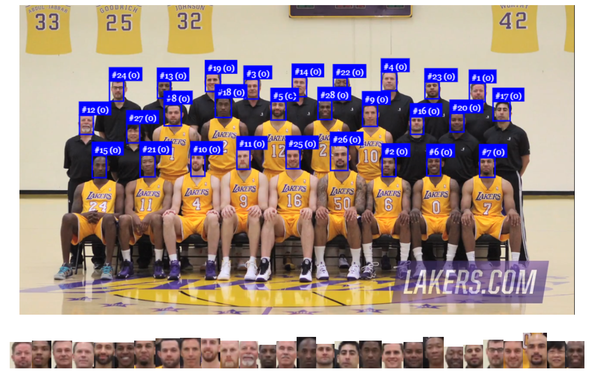
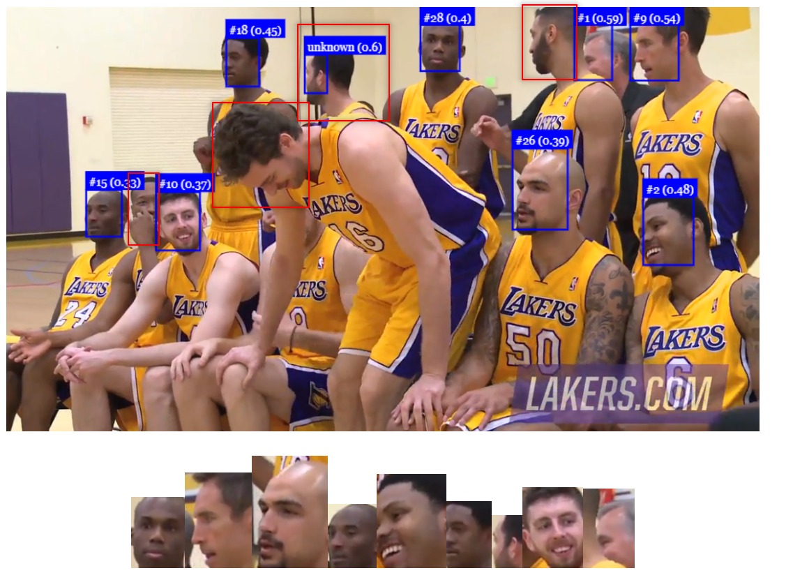

Blogs¶
Supervised Learning vs. Semi-Supervised Learning vs. Reenforcement Learning
For deep learning, there are severals ways how the learning can be processed. Here we put a new tag on how a POC or a algorithm learning from the dataset with the 4 categories as below:
Unsupervised Learning
Supervised Learning
Semi-Supervised Learning
Reinforcement Learning

References


Pre-trained Model, and What is Next Steps
Pre-trained Model
Pre-trained model for deep learning is the easiest entry point for an application developers to start the deep learning. With the pre-trained model as a blackbox, the application developers can focus on the problem he want to resolve with the pre-trained model and do the first integration and see the result of the integration resolve the target problem or not and how far it is to the perfect goal. If the goal become nearer, then a fine-tuning of pre-trained model or even a from-scratch pre-trained model can be addressed as a solution for the final integration.
There are several pre-trained models based on different programming langnauges and platforms.
Tensorflow.js Pre-trained Models
IBM MAX Pre-trained Models
nVidia Pre-trained Models
Pytorch Pre-trained Models
Fine-tune Models
Once the pre-trained model gives some promise on the solution to the problem. A deeper and better solution can be addressed by fine-tuning the model. We call it as fine-tuning model of pre-trained model.
There are several strategies of fine-tuning the models from much training efforts to less ones.

Another view for different dataset size for fine-tining models.

MLOps
Main idea of whole ML pipeline.

Basic idea of MLOps pipeline.

References
Tensorflow.js POC 12: Cam Face-recognition on face-api.js
Overview
| Git Repo | Status | Progress | Comments |
|---|---|---|---|
 |
tensorflow.js POC #11, #12 |
What is reinforcement learning?

Goals of POC #12
- Improve the POC #11 from semi-supervised learning to Reinforcement Learning by improve its face recognition rate
References
Tensorflow.js POC 7: face-api.js
Overview
Project Status
| Git Repo | Status | Progress | Comments |
|---|---|---|---|
 |
tensorflow.js POC #7 |
Project map of DLC
Check the project in the project map of deep learning computing to see the whole picture.
Test #1
Reference Input
Step 1: Input reference image

Step 2: extract faces and output face descriptors (Biometrics information of faces, 120 vectors value)

Query Input
Step 1: Input query image

Step 2: extract faces and output query face descriptors

Step 3: Compare reference and query face descriptors and output similarity score
red block is missing faces.
Test #2
Reference Input

Query Input
red block is missing faces.

References
Max POC 2: Super Resolution with SRGAN
Overview
| Git Repo | Status | Progress | Comments |
|---|---|---|---|
 |
IBM MAX SRGAN POC #2 |
The above image is one result of SRGAN. It is not good in artwork image. Visit the online benchmark comparsion of SRGAN of several different images on POC: Super Resolution with waifu2x
References
Tensorflow.js POC 8: Super Resolution with waifu2x
Overview
| Git Repo | Status | Progress | Comments |
|---|---|---|---|
 |
tensorflow.js POC #8 |
Overview
Super Resolution of images are important for video quality. Common SR like bicubic or lanczos3, now embedded in GPU as default SR. But, in 4K display or larger display, common SR is not enough, SR with Deep learning provide significant improvements on differnt target images.
Super resolution of images highly depends the properties of the image, like animation, line draw, or a full color complex nature images will have different results on different algorithms. Here we benchmark several traditional SR algorithm of bicubic, lanczos3, (Bell, and ....) from imageenlarger and do a comparison with a DL SR on line draw or animation style image.
Now we provide A/B Test on the different target images to verify the results of deep learning and normal images.
A/B test on waifu2x-NCNN vs. waifu2x vs. lanczos3 vs. bicubic vs. SRGAN
1096x632_PPT_image
1096x632_PPT_image is a 1096x632 size PNG with words and graph PPT. We use it to identify the clearance of the SR.
SRMD-NCNN = waifu2x-NCNN = waifu2x > lanczos3 > bicubic > Anime4K > SRGAN (bicubic is most GPU interpolation algorithm. So lanczos3 and waifu2x show better results to normal GPU). SRGAN, Anime4K: SR result is GG..
Quality comparison: bicubic < waifu2x
Part II
Check Part II
Next step
- WenGL version of waifu2x.js
- Speedup of waifu2x
References
Jekyll image comparison slider
In this page, twentytwenty image compare slider is used to enable image comparison slider.
To enable it in your post, please add the following code into your markdown documents
After above, you can have first version of image compariosn slider. But, if you want to change the label of the images. you will need to find default_with_image_slider.html and modify the code as below in the beginning of the .md file
You also can check the code of this site in gitbucket and search for all 'twentytwenty'